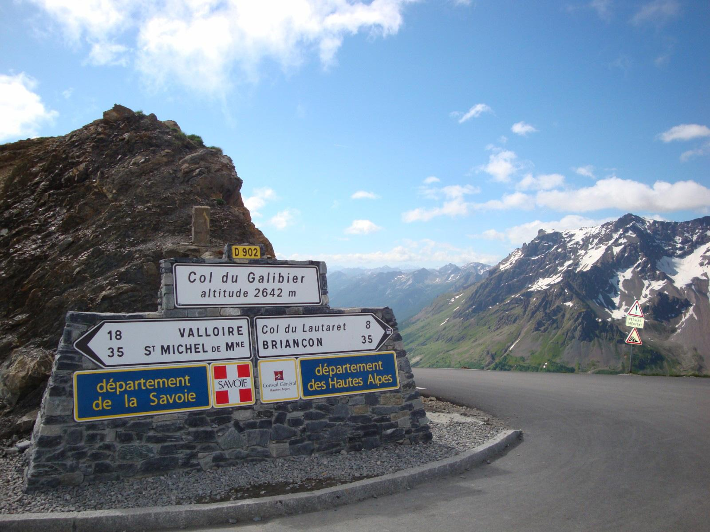
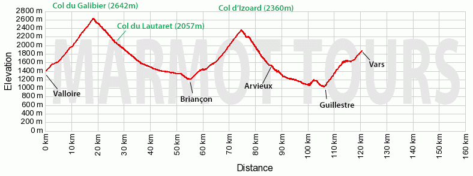

Lake Geneva to Nice
A classic road cycling challenge through the French Alps
The Raid Alpine (Lake Geneva to Nice) is a classic road cycling challenge through the French Alps over some of the most legendary Alpine climbs.
Including two of the highest passes in the Alps, the Cime de la Bonette (2,802m) and the Col de l'Iseran (2,770m), this route takes you through breathtaking mountain scenery.
The landscape shifts dramatically from quintessential Alpine meadows in the north to magnificent rocky gorges and Mediterranean landscapes in the south.
Check if the cols are open: Cols-Cyclisme

Travel day to reach the starting point at Thonon-les-Bains on Lake Geneva.
Warm up from Lake Geneva through pine forests.
Through famous Alpine areas. 26km descent to Bourg-Saint-Maurice
The Iseran - 36km climb!

Legendary Tour de France climbs
Highest paved road in Europe!
Final day - scenery becomes Mediterranean
Return journey from Nice.
Faster option depending on bike rental options and flights.